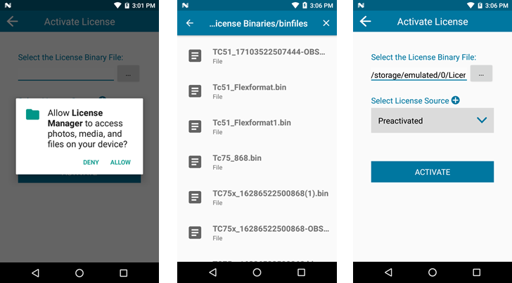
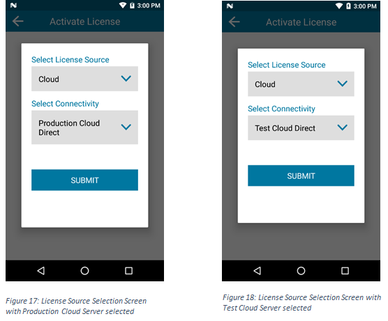
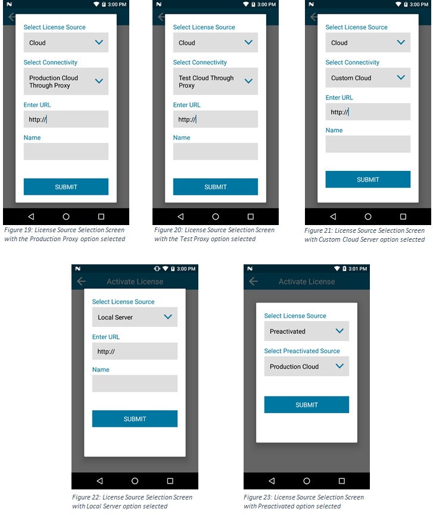
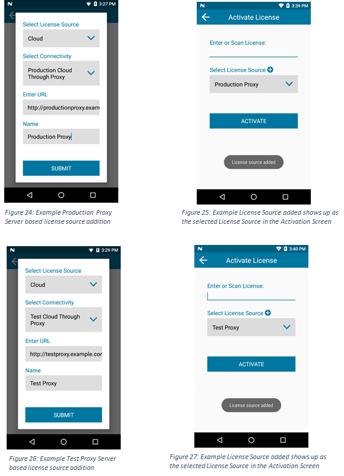
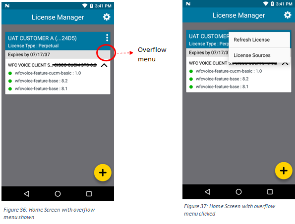

Note: The Enterprise Browser 2.0 licensing process is all new.
Overview
Enterprise Browser is free to download and use for evaluation purposes. Commercial deployment to devices requires an End-User License issued by Zebra Technologies for each device. Licenses are available for individual devices and for site deployments of 50 devices or more. Both license types permit an unlimited number of Enterprise Browser-based apps to run on the device(s). This guide explains the process of obtaining an Enterprise Browser license for commercial use and applying the license to individual devices and as part of a mass-deployment.
Requirements
- Zebra device with License Manager app (pre-installed on supported devices)
- Internet connection (for online license activation)
- For cloud-based licensing, any ONE of the following:
- Back Office Server, proxy server or a custom relay server
- Or, a Windows or Linux server for on-premise licensing
Manual Licensing
This section describes the process for activating a license on a single device. To remotely activate multiple licenses for an entire organization, please refer to the mass-deployment section.
To activate a device license:
- Locate and launch the License Manager app:

- Click the floating action button on the splash screen:

- The Activation screen appears (as below). Tap to select the License Source from the drop-down list.
Then tap ACTIVATE.
TO BE REVISED
Note: Choose the type of the license source under Select License Source option prior to typing any data in the license field above.
a. Select License Source: A valid License Source has to be chosen against which the license has to be activated.
The user can choose from the below license source types from the Select License Source drop down list for activating a license online.
License Source Types:
i) Cloud
ii) Local Server
The user has the provision to choose:
The existing default cloud license sources (Production Cloud Direct/Test Cloud Direct servers which are the default Back-Office Servers) with Cloud as the License Source type using the steps mentioned here Add new Proxy servers (Production Cloud Through Proxy/Test Cloud Through Proxy servers), Custom Cloud server (Relay server) and LocalServer (On-Premise Server) based license sources using the steps mentioned here. When a new license source is added under proxy server, custom server and local server options, the name of the server will be available as an option in the Select License Source drop down list. b. Enter or Scan License: A valid activation (rights) id of the license has to be entered in this field either by manually entering the id or by scanning the license.
After selecting a valid License Source, click on the Submit button.
On clicking the Submit button, a dialog box is shown to the user which informs about the impact of not setting the system time correctly as shown in Figure 7. This dialog box is displayed both in online and pre-activated license activation scenarios. The user can tick the Don’t ask again checkbox to hide the dialog box on the future license activation.
The Application validates the information and connects to the selected License Source as shown in Figure 8 and displays whether the license activation was successful or not.
If the license activation is successful, License activation successful toast message is shown and the activated license information is displayed in the form of a card in the Home screen as shown in Figure 9. Details about the license information in the Home Screen can be found here.
All the license rights displayed in the Home Screen are available for acquisition on the device.
IMAGE: Twin "activate license" screens plus getting license, and showing licended device.
5,6,7.png 6-9+flow.png 8,9.png 8.9.png
Preactivated Licenses
To activate a preactivated license (offline activation) for any of the Zebra Software Products, follow the steps given below:
Start the License Manager application. Click the floating action button on the Opening/Home screen. This will open the Activation screen as shown in Figure 5. This page has the following input fields, where the information needs to be added for activating a license:
Note: Always choose the type of the license source under Select License Source option prior to inputting any data in the license field above.
Select License Source: If the user wants to activate a license offline, then the Preactivated option has to be chosen under Select License Source drop down list and a preactivated source has to be chosen under Select Preactivated Source dropdown list as shown in Figure 10. Select Preactivated Source: The preactivated source is either the Production Cloud or Tet Cloud which depends on whether the license binary file was downloaded from Production Cloud Portal or Test Cloud Portal.
FIGURES 10, 11
Unlicensed version
Select the License Binary File: The user can click on the (…) browse button denoted by three dots beside the license input field. On clicking the button for the first time on the device, the user will be prompted with a runtime permission dialog asking for Storage permission only on devices running Android 6.0 (Marshmallow) and higher only as shown in Figure 12. In order to select a license binary file from the device, the user has to grant the storage permission for the License Manager application. This permission dialog will not be shown on subsequent selections if the permission is granted. On granting the storage permissions, the user will be prompted with a file picker to select a valid license binary file as shown in Figure 13. On selecting a valid license binary file, the path of the binary file will be shown in the Select the License Binary file input field as shown in Figure 14. Note that this field will be populated automatically based on the path of the license binary file chosen and the user cannot edit the value of this field.
FIGURES 12, 13, 14

Unlicensed version
After selecting a valid License Source, click on the Submit button. On clicking the Submit button, a dialog box is shown to the user which informs about the impact of not setting the system time correctly. This dialog box is displayed both in online and preactivated license activation scenarios. The user can tick the Don’t ask again checkbox to hide the dialog box on the future license activations. The Application processes the license binary file and displays whether the license activation was successful or not. If the license activation is successful, the activated license information is displayed in the form of a card in the Home screen as shown in Figure 9. Details about the license information in the Home Screen can be found here. All the license rights displayed in the Home Screen are available for acquisition on the device. License Source Selection: To select an existing license source from Activation Page, follow the steps given below:
On clicking on the Select License Source input field on the Activation page, License Source Selection screen will be displayed. This page has the following input fields, where the information regarding the license source needs to be selected/added for activating a license: Select License Source: This field lists all the license sources available on the device. A valid license source has to be selected from this field. This field usually denotes the name of the server for any of the user-added license sources. There are three default license sources available as shown in Figure 15: 1) Cloud
2) Local Server
3) Preactivated
FIGURE 15
 Unlicensed version
Unlicensed version
Cloud: Depending on the type of the Cloud server, the user can choose from one of the below options under Select Connectivity drop down list as shown in Figure 16:
Production Cloud Direct: For directly activating the licenses from the default Zebra Production Server. The user cannot add any license source under this option as shown in Figure 17. Test Cloud Direct: For directly activating the licenses from the default Zebra Test Server. The user cannot add any license source under this option as shown in Figure 18. Production Cloud Through Proxy: For activating the licenses from a proxy server to the Production Cloud Server. The user can enter the unique URL and the name of the proxy server and add it as a separate license source under this option as shown in Figure 19. Test Cloud Through Proxy: For activating the licenses from a proxy server to the Test Cloud Server. The user can enter the unique URL and the name of the proxy server and add it as a separate license source under this option as shown in Figure 20. Custom Cloud: For activating the licenses from a Custom/Relay server. The user can enter the unique URL and the name of the custom server and add it as a separate license source under this option as shown in Figure 21.
FIGURE 16
 Unlicensed version
Unlicensed version
ii) Local Server: This license source option corresponds to the On-Premise Server setup locally. The user can select Local Server option under Select License Source drop down and then enter the details of the On-Premise Server setup such as the unique URL and the name used to identify the server as shown in Figure 22. This adds a new License Source and will be available for subsequent activations under the Select License Source drop down list.
iii) Preactivated: If the user wants to activate a preactivated license, this option has to be chosen under Select License Source drop down list and a valid preactivated source has to be chosen under Select Preactivated Source dropdown menu as shown in Figure 23. The preactivated source is either the Production Cloud or Test Cloud which depends on whether the license binary file was downloaded from Production Cloud Portal or Test Cloud Portal. The user cannot add any license source under this option.
The user has the provision to add new license sources of the proxy servers (Production Cloud Through Proxy or Test Cloud Through Proxy), Custom Cloud server (Relay server) and Local (On-Premise Server) server based license sources using the steps mentioned here. Note that all the license sources added by the user are read only. The name of all the license sources added by the user will be displayed in this field below the above three options.
Enter URL: This input field is displayed only when the user is given the provision to add a new license source. The user has to enter the URL of the license source in this field. This field will also be visible while viewing any user-added license source but will be read only. Name: This input field is displayed only when the user is given the provision to add a new license source. The user has to enter a unique name of the license source in this field. This field will also be visible while viewing any user-added license source. The name added in this field will be added to the list of the license sources saved on the device.
FIGURES 17-23 (really)

Unlicensed version

Unlicensed version
Adding a License Source
("license source addition")
The user has the provision to add a new Proxy Server (Production Proxy/Test Proxy), Custom Server or a Local Server based license source. New License Sources can be added from Activation Page or from Settings Page.
To add a new license source from Activation Page, follow the steps given below:
1) If the user wants to add a license source which is Proxy to the Production Server, then the Select License Source field has to be set to Cloud and Select Connectivity field should be set to Production Cloud Through Proxy as shown in Fig 24.
2) If the user wants to add a license source which is a Proxy to the Test Server, then the Select License Source field has to be set to Cloud and Select Connectivity field should be set to Test Cloud Through Proxy as shown in Fig 26.
3) If the user wants to add a license source for a Custom Cloud (Relay) Server, then the Select License Source field has to be set to Cloud and Select Connectivity field should be set to Custom Cloud as shown in Fig 28.
4) If the user wants to add a Local license source, then the Select License Source field has to be set to Local Server as shown in Figure 30.
5) In all the above cases, the user will be prompted to enter a valid server URL and a unique name to identify the license source.
6) Once valid data is entered in the URL and Name input fields, the license source can be saved by clicking on the Submit button and license source added toast message is displayed to the user on successfully saving the license source.
7) All the valid license sources added by the user will be displayed in the Select License Source drop down list once they are saved on the device as shown in Figure 32.
8) Note that all the license sources (Proxy/Custom/Local) added by the user are read only and a maximum of ten license sources can be saved on the device at a time (which includes only the Custom Server and Local Server based license sources) including the default Production Cloud Direct and Test Cloud Direct license sources. Hence the user can add a maximum of eight license sources (can be either Custom license sources only or Local license sources only or combination of both). There is no limit for the Proxy server based license sources.
9) All the license sources are also displayed in License Sources screen in Settings as shown in Figure 33. New license sources can also be added through License sources screen in Settings as explained here.
FIGURES 24-33 (really, really?)

Unlicensed version
Unlicensed version
 Unlicensed version
Unlicensed version
Display Active Licenses
Active Licenses Display All the licenses currently active on the device are displayed in the form of cards in the Home Screen as shown in Figures 34 and 35. Each card in this screen corresponds to an active license.
Each license (card) displayed in the Home screen has the following information:
The first row in the card has the name of the organization who purchased the license along with the last four digits of the activation (rights) id used for activating the license. The second row in the card corresponds to the License Type. Valid license types include Perpetual, Permanent, Trial License, Test, etc. The third row in the card corresponds to the expiry date of the license in the format MM/DD/YYYY. If the license is going to expire within 30 days from the current date, the expiry date is shown in red color as shown in the second license card in Figure 35. Else the expiry date is shown in black color. The expiry date will be displayed as mentioned above if the license type is Perpetual and the license has a valid expiry date as shown in Figure 34. In case the license type is Perpetual but with no fixed expiry date (implying a permanent license), the expiry date field is shown as Perpetual License. The rows below the expiration date have the list of products followed by an arrow at the end of each row which enables to expand each product to view the list of features activated for the product. Each row under a product has a list of features and their version numbers in expanded view as shown in the Figures 34 and 35 which can be used for acquisition on the device. Each license can have any number of products associated with it. Each product has a list of features listed under it. The user can expand all the license cards displayed in the Home Screen as shown in Figure 35. But the user will be able to expand only one product in a license (card) at a time and if any other product in the same license (card) is clicked, the previously expanded view is collapsed automatically to display the features of the current product the user has clicked.
FIGURES 35, 35
Unlicensed version
Refreshing a License
To refresh a license which is currently active on the device, follow the steps given below:
1) Open the License Manager application
2) Activate a license using the steps mentioned here if no licenses are currently active on the device.
3) Once one or more licenses are currently active on the device, the user will be able to see the Home screen with a list of cards. Choose the license that needs to be refreshed and click on the overflow menu at the right top corner of the license (card) which displays the below two options: a) Refresh License b) License Sources as shown in Figure 37.
4) Click on Refresh License option in the overflow menu which sends a request to the server to refresh the selected license as shown in Figure 38.
5) Once the license is successfully refreshed, License refreshed successfully toast message is shown to the user and all the information in the card corresponding to the license will be updated as shown in Figure 39.
FIGURES 36-39

Unlicensed version
 Unlicensed version
Unlicensed version
Settings
Settings To access the Settings screen of the application, follow the steps given below:
1) Open the License Manager application
2) Select the Settings menu option by clicking on the Settings cog on the Opening screen or the Home screen.
3) The Settings screen (as shown in Figure 40) has the following options:
a) Notifications
b) License Sources
c) About
FIGURE 40
 Unlicensed version
Unlicensed version
Notifications
Notifications On clicking the Notifications option in Settings screen, the following options will be displayed:
1) Push Notification: If the user wants to receive notifications on the device for license expiry, toggle the Push Notification switch on.
2) Remainder for Expiry: The time period before which the user has to be notified on the device can be chosen by clicking the drop-down menu under Remainder for Expiry. The user can select one among the below options: 1 week before, 2 weeks before, 3 weeks before, 4 weeks before as shown in Figure 42. The first option (1 week before) is chosen as default.
Once the Push Notification switch is set and the desired time period is chosen, a notification will appear in the Status bar if any of the licenses currently active on the device is going to expire within the time period set as shown in Figure 43. The user will be notified of the license expiry within the time frame and the product name and activation id is displayed in the notification. The user can click on the notification from the Notifications pull-down which redirects the user to the Home screen of the License Manager application.
FIGURES 41-44
Unlicensed version
License Sources
All the license sources available on the device can be viewed by clicking on the License Sources option in Settings screen. This screen can also be opened by clicking on the License Source option in the overflow menu on any license card in the Home Screen. This screen lists all the license sources as individual list items as shown in Figure 46. The format of the information displayed in this screen is as follows:
The String before the delimiter (,) in each list item in the License Source screen corresponds to the unique server name entered by the user while saving the license source.
The server name is followed by the type of the server (Proxy/Custom/Local).
The second row in each list item corresponds to the URL of the license source entered by the user while saving the license source. Note that the server URL is shown only for user-added licenses sources.
The first two items in the License Source screen are the default license sources: Production Cloud Direct and Test Cloud Direct as shown in Figure 45. These two license sources are followed by user-added license sources as shown in Figure 46.
FIGURES 46, 46
Unlicensed version
License Source Addition in Settings
The user has the provision to add a new Proxy Server (Production Proxy/Test Proxy), Custom Server or a Local Server based license source. New License Sources can be added from Activation Page or from Settings Page.
To add a new license source from Settings Page, follow the steps given below:
1) Open the License Manager application
2) Click on the Settings cog on the Opening/Home screen
3) Click on License Sources option on Settings screen
4) Click on the floating action button (plus icon) present at the bottom right corner of the License Source screen
5) To add a Cloud based (Production Proxy, Test Proxy or Custom Cloud) license source, Select License Source field has to be set to Cloud and the desired license source type has to be chosen under Select Connectivity drop down list.
Production Cloud Through Proxy option is for the server acting as a proxy to the Production Cloud Server as shown in Figure 47.
Test Cloud Through Proxy option is for the server acting as a proxy to the Test Cloud Server as shown in Figure 48.
Custom Cloud option is for any of the Custom Server setup which can also be a relay server as shown in Figure 49.
6) To add a Local license source, Select License Source field has to be set to Local Server as shown in Figure 50.
7) In all the above cases, the user will be prompted to enter a valid server URL and a unique name to identify the license source.
8) Once valid data is entered in the URL and Name input fields, the license source can be saved by clicking on the Submit button.
9) Once the license source is saved, it will be displayed in the License Source screen in Settings as shown in Figure 51.
10) The recently added license source in the Settings page will be automatically selected as the current license source in the Activation screen. All the valid license sources added by the user (Proxy/Custom/Local) will be available for selection in the Select License Source list in the License Source selection screen while activating a license as shown in the Figure 52.
11) Note that all the license sources (Proxy/Custom/Local) added by the user are read only and a maximum of ten license sources can be saved on the device at a time (which includes only the Custom Server and Local Server based license sources) including the default Production Cloud Direct and Test Cloud Direct license sources. Hence the user can add a maximum of eight license sources (can be either Custom license sources only or Local license sources only or combination of both). There is no limit for the Proxy server based license sources.
FIGURES 47-52
 Unlicensed version
Unlicensed version
 Unlicensed version
Unlicensed version
About
On clicking the About option in Settings screen, the following options will be displayed as shown in Figure 53:
1) Device ID: The string displayed in this field corresponds to the unique serial number of the device on which the License Manager application is installed.
2) License Manager Version: The string shown in this field denotes the version of the License Manager application installed on the device in the format a.b.c where a, b and c are numerals.
3) License Agent Version: The string shown in this field denotes the version of the License Agent installed on the device in the format a.b.c.d.e.f where a, b, c, d, e and f are numerals.
The information displayed in the About screen is read only and it depends on the device and the version of the License Manager application and License Agent installed on the device.
FIGURE 53
 Unlicensed version
Unlicensed version
OLD OLD OLD OLD
Click on License Manager icon on the applications menu in the launcher as shown in below figures.
On clicking the License Manager icon, the application starts and displays the Opening screen shown in Figure 2 when there are no licenses currently active on the device. The Opening screen contains the following options:
a) Settings cog
b) Floating Action Button
In case of any licenses currently active on the device, the Home screen of the License Manager application is displayed as shown in Figure 3 and 4. The Home screen contains the following options:
a) Settings cog
b) Licenses currently active on the device with each license information displayed in the form of a card
c) Floating action button
Detailed explanation on the fields displayed in each of the currently active license in the Home screen can be found here.
Enterprise Browser 2.0 will support only Flexera licensing. To know more about Flexera licensing, please visit the below link. {eddy to add link} Licensing Tool User can activate a license via UI based tool names License Manager or via MDM admin tools. To know more about activating a license via UI based tool, please visit below link
{eddy to add link} To know more about licensing via MDM admin tool, please visit below link {eddy to add link} MDM admin can perform a mass deployment of licenses using MDM tools. For doing a mass deployment, user should ensure he has enough number of license count associated with the given license key (activation ID). License Model Supported Enterprise Browser supports two license Models Trial License for 9 months Perpetual License
Licensing Methods Cloud Activation : user can activate a license via internet LLS Activation : user can host a local license server in their premises to activate a license PreActivated License: User can activate a license using preactivated binary license file. To know more about licensing methods please visit below link {eddy to add link} Cloud Activation supports proxy servers, to know more about various proxy type configuration supported by Licensing Tools (LicenseManager), please visit below link {eddy to add link}
Raising a PO Please click the below link to contact Zebra Software Licensing team for license procurement. {eddy to add link for Trial} {eddy to add link for perpetual}
Transferring License Enterprise Browser does not support transferring a preactivated license. It supports transferring a license from one device to another if and only if license is activated via cloud or LLS. In this case user can return an activated license back to the pool (not applicable for preactivated license) and released license can be activated on a new device. To know more about returning a license back to cloud/LLS license pool is explained more here {eddy to add link for Return license feature}
Enterprise Browser License Screen Unlicensed Screen If user has not activated any licenses, user may see an unlicensed screen If user had activated a trial license and if it has expired, user may see an unlicensed screen.
Related Guides:
- Zebra StageNow | A free Windows app for remote device-staging and licensing
- Zebra License Manager | A free Android app for manual local device licening
- Enterprise Browser Setup Guide | Help with initial setup, connecting to devices and pushing files